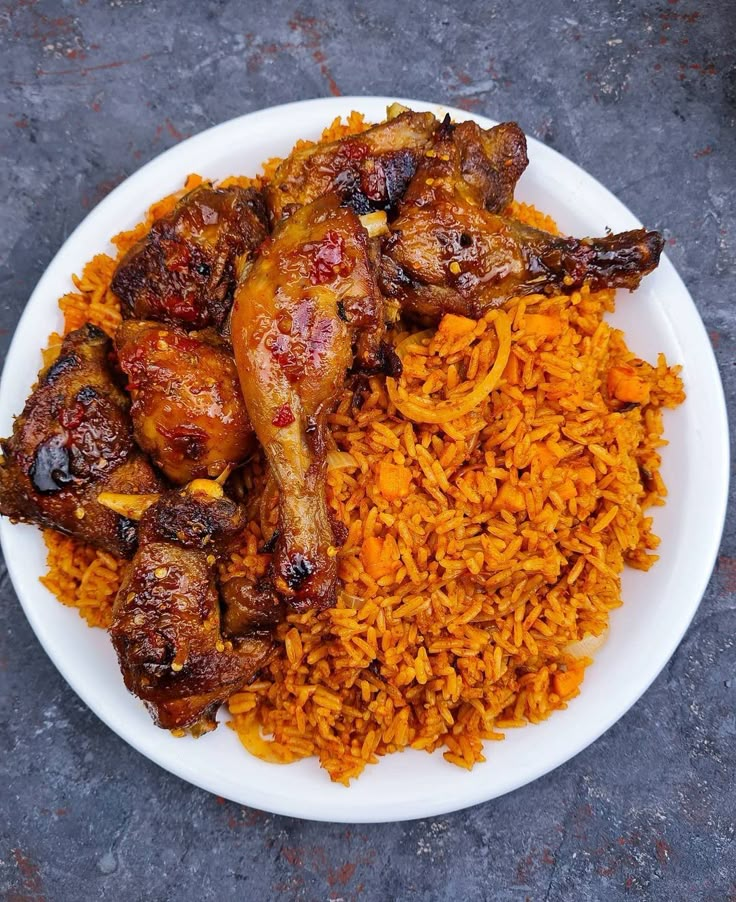

Jollof Rice

Description
Ingredients
- 3 cups long-grain parboiled rice
- 6 large tomatoes
- 3 red bell peppers
- 2 scotch bonnet peppers
- 1 large onion
- 3 tablespoons tomato paste
- 1/4 cup vegetable oil
- 2 cups chicken stock
- 1 teaspoon curry powder
- 1 teaspoon thyme
- 2 seasoning cubes
- 1 teaspoon salt
- 1/2 teaspoon black pepper
- 1 bay leaf
- Mixed vegetables (optional)
- Cooked chicken or beef for serving
Steps
- Wash the rice and set it aside.
- Blend the tomatoes, red bell peppers, scotch bonnet peppers, and half of the onion until smooth.
- Heat the vegetable oil in a large pot over medium heat.
- Slice the remaining half onion and fry it until soft.
- Add the tomato paste and fry for 2–3 minutes.
- Pour in the blended pepper mixture and cook for about 10–15 minutes, stirring occasionally, until the sauce thickens and the raw tomato taste disappears.
- Add the chicken stock, curry powder, thyme, seasoning cubes, salt, black pepper, and bay leaf.
- Stir well and bring the mixture to a gentle boil.
- Add the rice and stir until evenly coated with the sauce.
- Cover the pot tightly and cook on low heat for about 25–30 minutes. Stir occasionally to prevent burning.
- If the rice is too dry before it becomes soft, add a little water or stock.
- Add mixed vegetables if desired and cook for another 5 minutes.
- Serve hot with chicken, beef, fried plantains, or salad.
Home